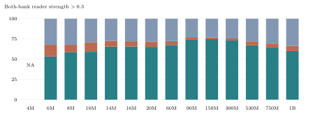
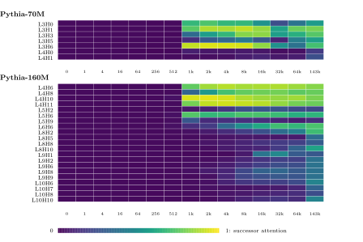
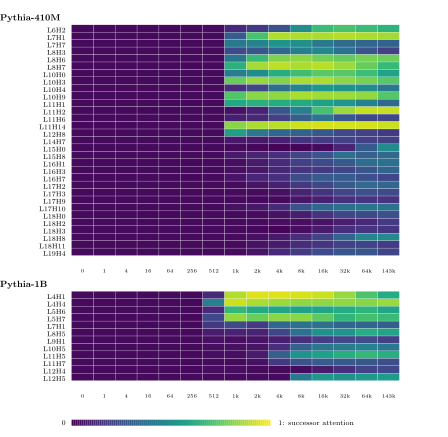

1 Why positive eigenvalues suggest matching
1.1 The joint matrix of a writer and a reader
In the induction pattern , two attention heads work together. At the historical position, an earlier head—the writer —uses its QK circuit to attend to the preceding . Its value projection reads the residual stream at , and its output projection writes the resulting information into the residual stream at . The later reader applies to this updated residual stream to form its key at historical , containing information about the preceding .
At the current position, the reader uses to form a query from the current residual stream. Its QK circuit compares this query with the keys at historical positions. For induction, this comparison favors the historical position because its key carries information about an matching the current token. The reader’s OV circuit then reads information about the historical successor from its residual stream and writes it into the residual stream at the current position, supporting the prediction of .
Using column vectors, define their K-composition matrix and its bilinear score by
(1)
Here are reader and writer inputs: represents current , while can represent any historical source token, matching or competing. The projection dimensions are , , and . The source contributes to the reader’s key at a candidate position, with writer attention weight . A previous-token writer typically gives the preceding token most weight. We omit and analyze .
A central question here is how this composition assigns a higher attention score to and representing the same token identity than to inputs representing different tokens, so that the reader can attend to and read from the correct historical successor.
1.2 A spectral clue, rather than a ranking conclusion
In 2022, Anthropic associated positive eigenvalues of the token-space matrix in a pure K-composition term with “same-matching” [2]. For one reader–writer pair, that matrix is , where maps one-hot token vectors to embeddings. Both contain the same QK–OV product, but includes embeddings and acts on one-hot inputs, while acts on residual representations. For the same one-hot vector on both sides, .
Anthropic weighted these matrices by , the earlier head’s mean attention to the immediately preceding position in example text, and computed the trace of their sum: where and denote the heads’ layers. Anthropic reported a correlation with behavioral prefix-matching scores in their small models [2].
The distinction between token embeddings and deep residual-stream representations matters here. Anthropic’s statistic selects pure K-composition paths: the query is projected directly from the embedding, while the key-side path passes the embedding through the writer’s OV matrix and then the reader’s K projection [2]. Deep residual inputs, however, contain not just token embeddings but also contributions from earlier attention heads and, when present, MLPs. We therefore use to study matching between these contextual representations without restricting them to embeddings.
1.2.0.1 Why a positive eigenvalue bias suggests self-matching
For a real eigenvector with positive eigenvalue , implies
(2)
This describes an eigenvector-aligned input. An arbitrary nonsymmetric matrix need not possess an orthonormal eigenbasis, or even a complete ordinary eigenbasis. Therefore this observation cannot be extended to every input by treating its eigenvectors as independent orthogonal coordinates.
For example,
(3)
Its eigenvectors and have eigenvalues and . Since and , expanding in this eigenbasis reveals a negative cross term:
(4)
Here the nonorthogonal eigenvectors yield a negative cross term that makes .
Even a nonnegative exact self-score would not establish that a contextual representation of the same token outranks all contextual representations of different tokens. That competitive question is the target of Section 3.
For RoPE, choose the convention and write
(5)
1.3 Selecting the reader–writer pair that defines
The transformer architecture does not specify a unique pairing between writer and reader heads. These are separate attention heads connected through the shared residual stream: multiple earlier heads can contribute information available to a later reader, and one earlier head can contribute to multiple readers. For the OLMo matrix surveys, we select one writer for each reader using the parameter-based criterion below. The saved Pythia token experiments use the fixed compositions specified in Section 3.2.1.
For a reader , the candidate writers are all heads in strictly earlier layers, irrespective of their previous-token behavioral labels. Let be the orthogonal projector onto the row space of the reader’s key matrix . For each candidate , define This measures the fraction of the writer’s OV matrix energy that lies in the residual directions read by . We select where and are the heads’ layers. A reader in the first layer has no earlier candidate.
The selected writer defines . The selected pair remains fixed throughout the distance analysis, while its RoPE-dependent matrix varies with .
Attention heads selected by this criterion generally exhibit some degree of previous-token attention, but the criterion does not guarantee the strength of this behavior.
2 Decomposing the matrix and its energy
2.1 Positive, negative, and antisymmetric contributions
Every real square matrix has the exact decomposition
(6)
Because , the scalar is equal to its own negative:
(7)
Consequently . This cancellation holds for the same vector on both sides. It does not remove from a cross-context score with .
The real symmetric matrix has a complete orthonormal eigenbasis. Writing separates mutually orthogonal directions, allowing its quadratic form to be read without nonsymmetric cross terms. Define
(8)
Here is the eigenvector for , and . Writing gives
(9)
Every squared coordinate is nonnegative, so the retained eigenvalue signs determine both inequalities. Either score is zero exactly when has no component in its corresponding positive or negative eigenspace.
The positive component rewards agreement in its weighted directions.
2.2 An additive energy accounting
Define the matrix energy as its squared Frobenius norm. Symmetric and antisymmetric matrices are orthogonal under the Frobenius inner product. In addition, and occupy disjoint eigenspaces, so . Expanding the squared norm therefore gives
(10)
The study cohort contains 700 checkpoints spanning the 14 nominal DataDecide scales. Readers retain their original behavioral labels and selected writers. A reader is included only if its attention-based successor score is strictly above the chosen threshold in each of two existing banks. This score is the average attention probability assigned to the designated correct successor position on repeated token sequences. Appendix A specifies the probe and aggregation.
For each component , we first average over every integer distance , then over eligible readers within a checkpoint, then equally over eligible checkpoints within a scale. The displayed fraction is the resulting mean raw energy divided by mean total energy. A scale with no eligible reader is marked NA.
2.3 Observed cross-scale energy composition

The positive symmetric component is the largest component at every populated scale in this snapshot. At the threshold its share ranges from 53.46% to 74.80%; at it ranges from 58.55% to 76.07%. At 90M and , the fractions are 73.96% for , 2.51% for , and 23.53% for . Full numerical values and sample counts appear in Appendix A.
These observations motivate asking how the positive component contributes to the complete matching margin.
3 Complete matching scores and positive-spectral geometry
We start from the complete matching score to ask when different token identities can each rank their own representations highest. Token representations vary around their respective centers. The full margin connects this requirement to the symmetric and antisymmetric parts of , and then identifies the role of eigenvector directions associated with positive eigenvalues of within that same comparison.
Let token have a center in a shared space. Two representations and can differ through deviations around that same center; a competing token has its own center : The deviations capture variation across contexts and layers. For a matching score , define the pairwise margin Self-matching has the strictly highest score when for every competing representation under the variations being considered. Modern Hopfield networks address a related separation-and-perturbation problem: comparing a perturbed input with fixed stored patterns . In our setting, the representations on both sides of a score vary across contexts and layers, so we expand the deviations of both same-token and different-token representations.
3.1 From the complete matching score to positive geometry
Recall that the complete Reader–Writer composition takes two residual representations as its left and right inputs: The reader maps through ; passes through the writer’s value and output maps and the reader’s key map. Fix a common distance and suppress . Two representations of token and one of token are
(11)
Each token has its own center, chosen as an observed mean or specified population center. Deviations across contexts and layers are expressed in a common residual coordinate frame.
3.1.0.1 Keep the complete score in the margin decomposition.
Direct expansion gives
(12)
To separate the center contributions, first substitute and expand: The last line uses . Since , the cross terms satisfy . Expanding the symmetric quadratic form therefore gives Solving for the cross term gives Substitute this expression into the first expansion:
(13)
Substituting this center identity into (12) gives the complete expanded margin: The last two terms combine as . Grouping this full expression, define
(14)
(15)
(16)
The exact complete-score margin is
(17)
Here the three terms describe different parts of the score comparison.
Center separation . This term measures how the symmetric part weights the difference between token centers. It enters the margin as . Since has both positive and negative parts, this contribution can have either sign.
Signed center bias . This combines the quadratic-form imbalance with the antisymmetric center interaction . The first compares the centers’ self scores under ; the second records the direction-dependent cross score from . Because is subtracted, a positive value reduces the self-matching margin and a negative value increases it.
Representation variation . This collects all terms involving deviations from the centers: the first representation’s deviation against the center difference, the center against the other deviations, and interactions between deviations on both sides. It retains the contributions to contextual variation and may increase or decrease the actual margin.
3.1.0.2 Ask for self-matching to win for both token identities.
Keep all deviations in the comparison. Alongside , take a left-input representation of token . Using the same and the same right-input observations and , the two directed margins are Each directed margin fixes one token on the left and compares its same-token observation with the other token’s observation on the right. Simultaneous self-matching requires both complete margins to be positive. The reverse expansion uses , , and Adding the two full margins yields
(18)
The quadratic-form imbalance and antisymmetric center interaction in reverse sign and cancel. The variation terms remain, including their interactions with ; they need not cancel.
Since both margins must be positive, their sum must be positive. Thus a necessary condition is
(19)
The contribution is nonpositive, while the summed variation can help or hurt. The -weighted center gap supplies a nonnegative contribution to this full comparison; its required size depends on the other terms.
A positive sum alone is insufficient. Each individual directed margin must satisfy Thus and the corresponding variation term remain important in each direction, even though the signed center biases cancel in the sum.
One optimization direction for making many different tokens prefer their own representations is therefore to enlarge their -weighted center gaps, , across token pairs. These gaps supply the positive separation contribution to the summed self-matching margins.
3.1.0.3 Use the observed energy composition to focus the analysis.
The expansion identifies how the positive part contributes to simultaneous matching of the observed representations. The archived OLMo/DataDecide measurements provide a second reason to examine it: is the largest mean Frobenius-energy component at every populated scale in Figure 1 and Table A2.
This concentration may echo the optimization direction above: as training progresses, the model may concentrate positive spectral energy on selected directions that increase by separating token centers. We therefore examine which directions are selected and how their weights contribute to separation. This is a possible interpretation of the learned concentration, while the complete one-way margins retain the contributions of , , signed bias, and contextual variation.
3.1.0.4 Resolve the positive contribution in the original space.
Applying the same expansion to the contribution gives
(20)
The first term compares token centers. The remaining terms couple the first representation’s deviation to the center difference, its center to the other deviations, and deviations on both sides. The matrix acts in every term.
Symmetry of gives Rearranging the center comparison therefore yields
(21)
Substituting this center identity into (20) gives the complete expanded margin: The last two terms combine as . Grouping the full expression now gives the three contributions in the original coordinates:
(22)
(23)
(24)
Then the exact margin is
(25)
measures center separation under . The signed bias compares the two center quadratic forms: a larger competing-center value is adverse, while a smaller one is favorable. The signed term records the representation deviations and their interactions; it can help or hurt a particular comparison.
3.1.0.5 Read the effect of the positive directions and their weights.
Write , where is a unit eigenvector and . Substituting this decomposition into the geometry term gives
(26)
The squared difference measures how far apart the token centers lie along ; sets its contribution to . Directions with larger center differences, together with greater positive weights, enlarge this geometry contribution to the matching margin.
The same directions and weights also enter and : Thus weights center differences, center magnitudes, and representation deviations through the same selected directions. Their signed combination determines the same-token score advantage.
3.1.0.6 View the same comparison inside the positive subspace.
Let be the number of positive eigenvalues. The columns of are the corresponding orthonormal directions, and contains their positive eigenvalues. Factoring these weights gives
(27)
Here contains the coordinates along the selected directions. Multiplication by turns coordinate into . The same transformation is applied to , so their inner product weights the product of the two coordinates by , reproducing .
We study the token distribution inside this shared space to understand how the selected directions increase center separation and strengthen the same-token score advantage.
Map centers and deviations separately. By linearity, each original representation maps to the sum of its mapped center and deviation. Define
(28)
Applying these definitions to , , and gives Thus representations of token share the center code , while their contextual or layer deviations remain distinct.
Expand the same margin in these coordinates. Apply (27) to both scores, then substitute the mapped inputs: The center term can be separated by expanding : Substituting this identity into the complete margin gives We can now identify the three contributions in the mapped space:
(29)
These are the original-space quantities in new coordinates. For example, The same bilinear identity converts the two center quadratic forms in into squared norms and the two deviation products in into inner products. Thus center distances, center-norm differences, and the distribution of deviations describe the same margin as (25), now through the token distribution within the selected space.
3.1.0.7 Keep the component interpretation attached to the complete score.
Replacing by in the original-space definitions gives , , and . Let Then the complete quantities satisfy
(30)
Every positive-component term is part of the same complete comparison. Although , the signed norm and deviation terms can help or hurt a directed margin; contributes to both directed center matching and variation. Component margins must be evaluated against the same competitor chosen using the full score, rather than selecting a separate competitor for each component.
3.2 Matching margins under the complete positive and joint operators
We measure same-token matching under the complete positive operator and the complete Reader–Writer composition in Pythia-70M-deduped, Pythia-160M-deduped, Pythia-410M-deduped, and Pythia-1B-deduped. Both operators retain their native spectral weights. All reported margins and components are in the original score units, including the model’s attention head scaling.
3.2.1 Representations and behavior-selected composition paths
For each of the 50,277 tokenizer IDs, the capture uses up to sixteen natural occurrences from distinct source documents. Left-context windows end at that token, with lengths . An occurrence is included when sufficient genuine left context is available; gives the isolated-token input. At each of fifteen checkpoints, each observation is the target token’s attention-input vector after input LayerNorm at one layer. The models have 6, 12, 24, and 16 layers and residual dimensions 512, 768, 1024, and 2048, respectively. Their head widths are 64, 64, 64, and 256.
Readers are selected using a separate repeated-token-sequence probe at checkpoint 143,000. Each bank uses 32 sampled sequences, each consisting of a 128-token random prefix repeated twice. A candidate must assign at least 0.11 mean attention to the correct historical successor in each of two independently sampled probe banks. This identifies heads exhibiting induction-style matching on those examples. The probes sample a finite set of tokens and contexts, so a head below the threshold may still match other tokens or contexts well. The threshold is a selection rule, not an exhaustive classification of matching ability.
For each Reader, select the closest strictly earlier layer containing a head whose previous-token attention is at least 0.5 in both banks; within that layer choose the head with the highest minimum bank score. This defines one Writer–Reader path, held fixed across checkpoints. Several Readers can share a Writer, and a Reader can receive information from other earlier heads through the residual stream. The reported populations contain 7, 21, 31, and 12 composition paths in 70M, 160M, 410M, and 1B, respectively. Each model summary gives its reported paths equal weight.
3.2.2 Use the complete operators and compute each comparison
For a fixed Reader and Writer , construct The positive part is formed separately at each distance before averaging. The experiment uses every direction and every eigenvalue of these complete operators; no spectral truncation is applied.
At one checkpoint and for one path, write . Let , , be the recorded observations of token , spanning the available natural contexts, lengths, and layers. Compute its center and each deviation as For two distinct observations of token and an observation of competitor token , the exact score difference under is Define and . The decomposition in Section 3.1 gives For , and . For , these expressions retain its positive, negative, and antisymmetric contributions together.
3.2.2.1 Average the same comparisons for every component.
There are target token identities with at least two recorded natural contexts and 48,622 available token identities in the comparison pool. For target , let contain every other identity in this pool. Each target has weight , each competitor identity has weight , and every ordered observation comparison has equal weight within its token identities: These are finite population averages, with each recorded observation equally weighted within its token. Checkpoints remain separate. The tables average the path-specific quantities equally within each model. The online report exposes each path and checkpoint separately.
3.2.3 From sampled attention behavior to matching margins
We first use attention on sampled repeated random sequences to locate candidate Readers. For these Pythia experiments, the closest preceding strong previous-token Writer then fixes a composition path. Starting from these behavior-selected paths, we compute the margins above over a broader recorded population of token identities and natural contexts.
The probe score and the population margin describe different quantities. The probe averages attention probability on its sampled repeated sequences. The margin averages the same-token versus competing-token score difference under a specified joint operator, using the recorded token, context, length, and layer weights. A head’s strength under the first measurement need not equal its strength under the second. For example, 410M L11H2 has endpoint confirmation score 0.9386 and , whereas L8H7 has score 0.6858 and .
The mathematical precision of comes from specifying the comparison exactly: once the inputs and joint operator are fixed, it is an exact bilinear score difference, with the exact decomposition . Its population average gives a numerical description of this induction-matching path across the broader recorded token and context population. This precision concerns the defined path score; it does not make the two measurements equivalent or turn the margin into the observed attention probability.
An actual Reader attention pattern additionally depends on how strongly the Writer attends along this OV route, which historical positions compete in that context, their RoPE distances, context-dependent normalization, and the other contributions to the Reader’s query and key. If and denote the Writer attention weights on the two source routes and their Reader relative distances, the isolated weighted comparison is Even this expression isolates one composition path; the full attention softmax compares all candidate positions using the complete query–key logits. The distance-averaged reported here is a broader average over the specified recorded token and context population, rather than the attention probability on one probe sequence.
3.2.4 Endpoint components and their contribution to matching
Mean |b| takes the absolute value for each token-pair bias before averaging. It measures bias magnitude; signed b and signed T retain their roles in m = G − b + T. A small signed mean can contain cancellation across comparisons.
Table 1 reports both complete operators at checkpoint 143,000. All four model averages have a positive margin under both operators. In these population averages, the separation term supplies the dominant positive contribution; the signed norm-bias and deviation means are much smaller. These signed means describe net contributions, while mean |b| separately describes the size of individual biases. The complete operator also includes the negative and antisymmetric parts, which can change individual paths substantially.
| Model | Operator | Mean |b| | ||||
|---|---|---|---|---|---|---|
| 70M | 3.231071 | -0.001269 | 0.860437 | -0.043418 | 3.188922 | |
| 70M | 2.756676 | -0.000474 | — | -0.029959 | 2.727190 | |
| 160M | 2.000045 | -0.001508 | 0.419604 | -0.009588 | 1.991965 | |
| 160M | 1.762952 | -0.000140 | — | -0.006986 | 1.756106 | |
| 410M | 0.994606 | -0.001773 | 0.239750 | -0.001176 | 0.995202 | |
| 410M | 0.904222 | -0.000865 | — | -0.000755 | 0.904332 | |
| 1B | 2.120978 | -0.002364 | 0.378833 | -0.001996 | 2.121346 | |
| 1B | 1.768305 | -0.001803 | — | -0.001223 | 1.768884 |
Table 1. Complete-operator endpoint components in original score units. Each row averages the reported paths equally: 7, 21, 31, and 12 in 70M, 160M, 410M, and 1B. The signed bias is subtracted.
For example, 1B Reader L12H4 with Writer L3H5 has and , giving a complete mean margin of after bias and deviations. Its probe score is 0.2214. Thus the positive component’s contribution and the complete comparison should be read together. Small signed averages of or can also contain cancellation across individual comparisons.
3.2.5 Evolution across training
Tables 2a–2d follow the same fixed paths across the fifteen checkpoints. Each checkpoint uses its own complete and , with the same token and observation weighting. The margins grow substantially from initialization, but their later evolution need not be monotonic. For the positive component, the means peak at step 64,000 in 70M and step 32,000 in the other three models, then decline toward the endpoint. The separation term accounts for most of these late decreases; the signed and contributions are smaller. For 70M, 83.6% of the decline in from step 64,000 to 143,000 comes from the decrease in .
| Pythia-70M | |||||||||
| Complete | Complete | ||||||||
| Checkpoint | Mean |b⁺| | ||||||||
|---|---|---|---|---|---|---|---|---|---|
| 0 | 0.039719 | -1.2031e-5 | 0.0054094 | -0.0001065 | 0.039624 | -0.00023603 | 4.1869e-7 | -7.0503e-7 | -0.00023716 |
| 1 | 0.039719 | -1.2031e-5 | 0.0054094 | -0.0001065 | 0.039624 | -0.00023603 | 4.1869e-7 | -7.0503e-7 | -0.00023716 |
| 4 | 0.039721 | -1.2043e-5 | 0.0054134 | -0.00010656 | 0.039626 | -0.00023562 | 4.1756e-7 | -7.5229e-7 | -0.00023679 |
| 16 | 0.036673 | -1.1682e-5 | 0.0055144 | -0.00010932 | 0.036575 | -0.00020642 | 3.7264e-7 | -2.2874e-6 | -0.00020908 |
| 64 | 0.021325 | -7.7414e-6 | 0.0049011 | -0.00010598 | 0.021227 | -0.00019462 | 6.915e-7 | 3.4549e-6 | -0.00019185 |
| 256 | 0.040322 | -4.3365e-5 | 0.011827 | -0.00015909 | 0.040206 | 0.0023169 | -2.247e-5 | -6.8851e-6 | 0.0023325 |
| 512 | 0.098929 | -0.00011374 | 0.031027 | -0.00024277 | 0.0988 | 0.05193 | -9.9316e-5 | -6.0311e-5 | 0.051969 |
| 1000 | 0.81162 | -0.00066758 | 0.13287 | -0.0012685 | 0.81102 | 0.74239 | -0.0007222 | -0.00092305 | 0.74219 |
| 2000 | 1.4673 | -0.0010974 | 0.21022 | -0.0022461 | 1.4661 | 1.3631 | -0.00088707 | -0.0017843 | 1.3622 |
| 4000 | 1.9505 | -0.0013354 | 0.26413 | -0.0031555 | 1.9487 | 1.8212 | -0.00099649 | -0.0025981 | 1.8196 |
| 8000 | 2.4968 | -0.0019134 | 0.35139 | -0.0042999 | 2.4944 | 2.3419 | -0.0015453 | -0.0036017 | 2.3399 |
| 16000 | 2.8039 | -0.0026136 | 0.40639 | -0.0051102 | 2.8014 | 2.639 | -0.002275 | -0.0042917 | 2.637 |
| 32000 | 2.9125 | -0.0030697 | 0.42837 | -0.0058108 | 2.9097 | 2.7391 | -0.0025944 | -0.0048453 | 2.7368 |
| 64000 | 3.4066 | -0.0032854 | 0.56562 | -0.011117 | 3.3988 | 3.1836 | -0.0027751 | -0.0091881 | 3.1772 |
| 143000 | 3.2311 | -0.0012692 | 0.86044 | -0.043418 | 3.1889 | 2.7567 | -0.00047376 | -0.029959 | 2.7272 |
Table 2a. Pythia-70M: complete-operator across training in raw score units. Entries give equal weight to the fixed reported paths. Values are rounded to five significant digits; e denotes powers of ten.
| Pythia-160M | |||||||||
| Complete | Complete | ||||||||
| Checkpoint | Mean |b⁺| | ||||||||
|---|---|---|---|---|---|---|---|---|---|
| 0 | 0.01571 | -6.3166e-6 | 0.002278 | -2.1352e-5 | 0.015695 | -2.9881e-5 | 3.5892e-7 | -3.9613e-8 | -3.028e-5 |
| 1 | 0.01571 | -6.3166e-6 | 0.002278 | -2.1352e-5 | 0.015695 | -2.9881e-5 | 3.5892e-7 | -3.9613e-8 | -3.028e-5 |
| 4 | 0.015702 | -6.3456e-6 | 0.0022764 | -2.1354e-5 | 0.015687 | -2.9641e-5 | 4.1577e-7 | 1.4177e-8 | -3.0043e-5 |
| 16 | 0.010786 | -5.3304e-6 | 0.002059 | -1.9929e-5 | 0.010771 | -1.2882e-5 | 9.2924e-7 | 6.2451e-7 | -1.3187e-5 |
| 64 | 0.010099 | -7.2552e-6 | 0.0020931 | -2.2182e-5 | 0.010084 | -9.6717e-6 | -2.2316e-7 | -6.5593e-8 | -9.5141e-6 |
| 256 | 0.015688 | -7.7821e-6 | 0.0030129 | -2.9517e-5 | 0.015667 | 0.00020793 | -6.9632e-7 | -3.5363e-7 | 0.00020827 |
| 512 | 0.029403 | -2.529e-5 | 0.0094527 | -4.2651e-5 | 0.029385 | 0.0095104 | -1.0478e-5 | -6.8199e-6 | 0.009514 |
| 1000 | 0.16587 | -0.0001254 | 0.029969 | -0.00015733 | 0.16584 | 0.13483 | -0.00012456 | -9.1551e-5 | 0.13487 |
| 2000 | 0.38338 | -0.00027108 | 0.060568 | -0.00031554 | 0.38334 | 0.32076 | -0.00019098 | -0.00019648 | 0.32076 |
| 4000 | 0.70947 | -0.00050351 | 0.11036 | -0.0005968 | 0.70938 | 0.5799 | -0.00034785 | -0.00037399 | 0.57987 |
| 8000 | 1.2401 | -0.0010073 | 0.19413 | -0.0011331 | 1.24 | 1.0109 | -0.00064893 | -0.00073382 | 1.0108 |
| 16000 | 1.9748 | -0.0018963 | 0.3154 | -0.0019992 | 1.9747 | 1.7045 | -0.0013969 | -0.0014411 | 1.7045 |
| 32000 | 2.6918 | -0.0029819 | 0.43928 | -0.0030276 | 2.6918 | 2.4179 | -0.0024243 | -0.0023515 | 2.4179 |
| 64000 | 2.5418 | -0.0030106 | 0.43098 | -0.0040855 | 2.5407 | 2.2875 | -0.0022871 | -0.0031483 | 2.2866 |
| 143000 | 2 | -0.0015078 | 0.4196 | -0.009588 | 1.992 | 1.763 | -0.00014016 | -0.0069864 | 1.7561 |
Table 2b. Pythia-160M: complete-operator across training in raw score units. Entries give equal weight to the fixed reported paths. Values are rounded to five significant digits; e denotes powers of ten.
| Pythia-410M | |||||||||
| Complete | Complete | ||||||||
| Checkpoint | Mean |b⁺| | ||||||||
|---|---|---|---|---|---|---|---|---|---|
| 0 | 0.0061982 | -2.9218e-6 | 0.00096515 | -4.5753e-6 | 0.0061965 | -2.2404e-6 | 9.0637e-8 | 3.5207e-8 | -2.2958e-6 |
| 1 | 0.0061982 | -2.9218e-6 | 0.00096515 | -4.5753e-6 | 0.0061965 | -2.2404e-6 | 9.0637e-8 | 3.5207e-8 | -2.2958e-6 |
| 4 | 0.00613 | -2.9866e-6 | 0.00097063 | -4.5653e-6 | 0.0061284 | -2.1199e-6 | 1.7459e-8 | 3.1172e-8 | -2.1062e-6 |
| 16 | 0.0030477 | -2.1293e-6 | 0.00083221 | -3.8028e-6 | 0.0030461 | 3.7403e-6 | -2.7203e-7 | -7.1709e-9 | 4.0051e-6 |
| 64 | 0.0044528 | -4.0085e-6 | 0.00092766 | -4.5399e-6 | 0.0044522 | 8.1259e-6 | -8.9903e-7 | 7.2795e-8 | 9.0978e-6 |
| 256 | 0.0064059 | -4.154e-6 | 0.0010061 | -5.8299e-6 | 0.0064042 | -2.85e-5 | -3.3661e-7 | 5.668e-8 | -2.8107e-5 |
| 512 | 0.0083455 | -3.6455e-6 | 0.0013976 | -6.6194e-6 | 0.0083425 | -0.00021529 | -5.8105e-7 | 1.0355e-7 | -0.00021461 |
| 1000 | 0.079201 | -0.00010021 | 0.019915 | -3.6163e-5 | 0.079266 | 0.061049 | -9.2596e-5 | -1.8591e-5 | 0.061123 |
| 2000 | 0.26323 | -0.00023941 | 0.047961 | -0.00010532 | 0.26336 | 0.22455 | -0.00020685 | -6.5247e-5 | 0.22469 |
| 4000 | 0.55559 | -0.00042394 | 0.095979 | -0.00024059 | 0.55578 | 0.48691 | -0.000342 | -0.000167 | 0.48708 |
| 8000 | 1.0636 | -0.00073983 | 0.17609 | -0.00053109 | 1.0638 | 0.94806 | -0.00045671 | -0.00039704 | 0.94812 |
| 16000 | 1.6482 | -0.0011935 | 0.27616 | -0.00088185 | 1.6485 | 1.4846 | -0.00071405 | -0.00066769 | 1.4846 |
| 32000 | 2.123 | -0.0018667 | 0.3641 | -0.0011607 | 2.1237 | 1.9284 | -0.0011919 | -0.0008796 | 1.9287 |
| 64000 | 1.9873 | -0.002177 | 0.35222 | -0.0011571 | 1.9883 | 1.8167 | -0.0014489 | -0.00087893 | 1.8173 |
| 143000 | 0.99461 | -0.0017726 | 0.23975 | -0.0011758 | 0.9952 | 0.90422 | -0.00086534 | -0.0007548 | 0.90433 |
Table 2c. Pythia-410M: complete-operator across training in raw score units. Entries give equal weight to the fixed reported paths. Values are rounded to five significant digits; e denotes powers of ten.
| Pythia-1B | |||||||||
| Complete | Complete | ||||||||
| Checkpoint | Mean |b⁺| | ||||||||
|---|---|---|---|---|---|---|---|---|---|
| 0 | 0.026239 | -1.276e-5 | 0.0021128 | -2.9184e-5 | 0.026223 | -3.465e-5 | 1.5678e-7 | 1.3464e-7 | -3.4672e-5 |
| 1 | 0.026239 | -1.276e-5 | 0.0021128 | -2.9184e-5 | 0.026223 | -3.465e-5 | 1.5678e-7 | 1.3464e-7 | -3.4672e-5 |
| 4 | 0.02622 | -1.2818e-5 | 0.0021155 | -2.9178e-5 | 0.026203 | -3.4236e-5 | 1.1852e-7 | 1.1763e-7 | -3.4237e-5 |
| 16 | 0.014209 | -9.1642e-6 | 0.0017687 | -2.5192e-5 | 0.014193 | -1.7605e-5 | 4.5978e-7 | 1.8473e-7 | -1.788e-5 |
| 64 | 0.020472 | -9.5199e-6 | 0.0019422 | -2.9293e-5 | 0.020452 | -8.648e-5 | 3.2131e-8 | -7.9156e-8 | -8.6591e-5 |
| 256 | 0.028226 | -8.4689e-6 | 0.0028 | -3.5954e-5 | 0.028199 | 9.881e-5 | -3.7461e-6 | -1.5579e-7 | 0.0001024 |
| 512 | 0.15569 | -0.00021039 | 0.041477 | -9.4745e-5 | 0.15581 | 0.11242 | -0.00021332 | -3.7527e-5 | 0.11259 |
| 1000 | 0.31735 | -0.00028794 | 0.054548 | -0.00019276 | 0.31745 | 0.25351 | -0.0002573 | -9.9862e-5 | 0.25367 |
| 2000 | 0.77285 | -0.00048871 | 0.11955 | -0.00045024 | 0.77288 | 0.64678 | -0.00037615 | -0.00026606 | 0.64689 |
| 4000 | 1.4249 | -0.00073729 | 0.21883 | -0.00086625 | 1.4248 | 1.2151 | -0.00059339 | -0.00054768 | 1.2152 |
| 8000 | 2.3465 | -0.0013076 | 0.36635 | -0.0015624 | 2.3462 | 2.0072 | -0.0010346 | -0.0010155 | 2.0072 |
| 16000 | 3.4753 | -0.0024254 | 0.55709 | -0.0025829 | 3.4752 | 2.9692 | -0.0019691 | -0.0016992 | 2.9694 |
| 32000 | 4.3465 | -0.0038954 | 0.73657 | -0.0035612 | 4.3468 | 3.6825 | -0.0030719 | -0.0023087 | 3.6833 |
| 64000 | 3.9461 | -0.0041438 | 0.68411 | -0.0035096 | 3.9468 | 3.3137 | -0.0032533 | -0.0022161 | 3.3147 |
| 143000 | 2.121 | -0.0023641 | 0.37883 | -0.0019955 | 2.1213 | 1.7683 | -0.0018027 | -0.0012235 | 1.7689 |
Table 2d. Pythia-1B: complete-operator across training in raw score units. Entries give equal weight to the fixed reported paths. Values are rounded to five significant digits; e denotes powers of ten.
3.2.5.1 Read the behavior heatmap as a probe measurement.
Figures 2a–2b show attention to the correct historical successor in the independent repeated-sequence scan for the reported paths. Its intensity records behavior on the particular sampled tokens, contexts, and sequence lengths in that scan. It is not the value of or a comprehensive ranking of matching ability. The margin summaries above average a broader recorded population of token pairs and natural contexts under the specified operator. Both measurements are informative when their input distributions and comparison weights are kept explicit.


At the trained checkpoint, provides the largest positive contribution in the reported model averages to the overall matching margin. The component decomposition explains this contribution in the same score units as the complete comparison, while the probe records how the head behaves on a specified repeated-sequence test.
Explore a complete composition path
Choose a model, checkpoint, and Reader–Writer path. Values are raw finite-population averages under the complete operators. The probe score is measured at checkpoint 143,000 and identifies the fixed endpoint-selected head.
Mean |b| is computed before averaging token pairs and describes bias magnitude. The margin identity uses signed b and signed T.
| Operator | G | b (signed mean) | Mean |b| | T (signed mean) | m = G − b + T |
|---|
Download the numerical data and weighting definitions · Download mean absolute bias by path and checkpoint